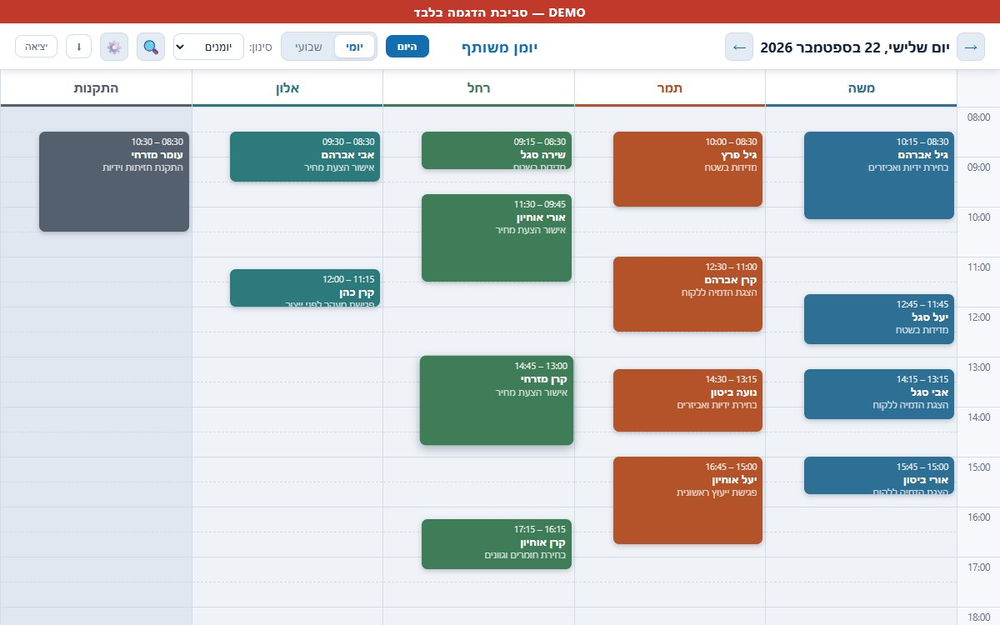

ריבוי יומנים
כל עובד או חדר מקבל עמודה קבועה משלו, וכולם מוצגים זה לצד זה באותה תצוגת יום.
כל עובד או חדר מקבל עמודה משלו באותה מסך, עם כל פרטי הפגישה, תזכורת בוואטסאפ שיוצאת ללקוח בלחיצה, וסל מיחזור לפגישה שנמחקה בטעות.

הדוגמה למעלה מציגה חמישה יומנים לדוגמה עם נתונים בדויים.
כל עובד או חדר מקבל עמודה קבועה משלו, וכולם מוצגים זה לצד זה באותה תצוגת יום.
שם לקוח, טלפון, הערות וסיכום נשמרים לכל פגישה, לא רק השעה והשם.
כפתור בפגישה פותח וואטסאפ עם הודעת תזכורת מוכנה מראש ללקוח, שנשארת רק לשלוח.
מעבר בין יום לשבוע, עם כפתור "היום" לחזרה מהירה לתאריך הנוכחי.
פגישה שנמחקה בטעות אפשר לשחזר מרשימה נפרדת, במקום לאבד אותה לצמיתות.
מחפשים פגישה לפי שם לקוח, ומורידים גיבוי מלא של כל היומנים בלחיצה.
ספרו איך זה עובד אצלכם היום — ונבדוק אם כדאי לרכז הכול במקום אחד.